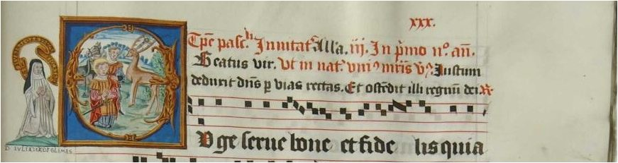

Welcome to the New SIMSSA Blog!
Posted by cmotuz on September 30, 2011
Welcome to the new blog for the project “Single Interface for Music Score Searching and Analysis” (SIMSSA). Here you can learn about the ins and outs of this cutting-edge project, which involves developing Optical Music Recognition (OMR) to allow computers read music of many different notational styles, making digital scores searchable. Just as when you scan a text, a computer will use Optical Character Recognition (OCR) to convert graphics into letters, OMR converts notated music into a form where it can be separated out into its components and analyzed. You can already browse the results of last year’s project, where the lab taught a computer how to read the Liber Usualis.
Now our exciting piece of news is that we’ve received and put online a digital copy of the Salzinnes Antiphonal. This is the manuscript which we’ll use for the next step of our project: teaching a computer to read handwriting. As you can see, it’s not a manuscript that we’ll tire of looking at: every page is a work of art.
The manuscript comes to us from another Canadian university: from Collection of the Patrick Power Library, Saint Mary’s University, Halifax. It was commissioned 1554-1555 by the Salzinnes Abbey in Namur, which is now in Belgium, and was probably acquired in France before being brought to Halifax in the 1840’s or 50’s. It’s remarkable not just for its music (the neatness of which is of course a big help to us), but for containing named full-length portraits of thirty-four nuns of the 1550’s, from three different orders. These were real people: their names have been confirmed with records at the Royal Archives in Brussels. Many thanks to Judith Dietz for providing not only the digitized version of this source, but also this fascinating background information.
As a newcomer to the project myself and coming from a performer’s background, I feel like I’ve just embarked on the beginning of a steep learning curve. Notes I can understand, but how does a computer read neumes? How does it separate out the notes from staves, from text, and from the beautiful artwork in manuscripts? And maybe the most exciting question, what can we use the searchable capabilities for? I’ll try to answer these questions over the course of the coming year, as well as give updates on news from the lab, profiles of the people involved, and links to the exciting developments of our partners on this project… so, please do stay tuned!
